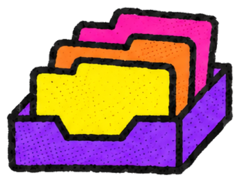
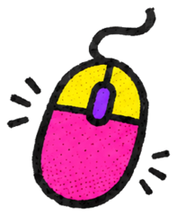
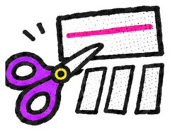
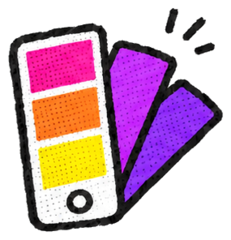
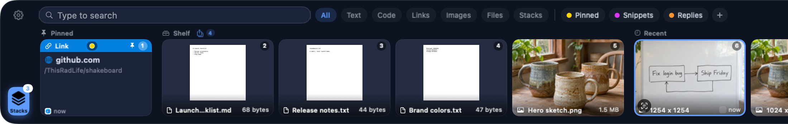
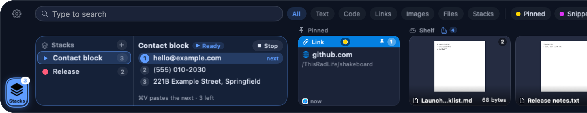
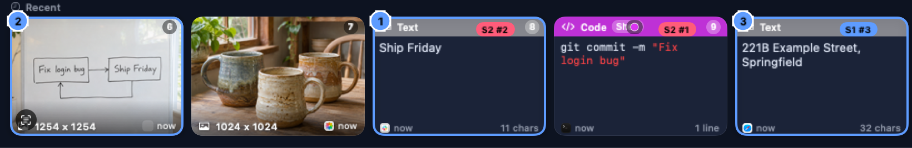
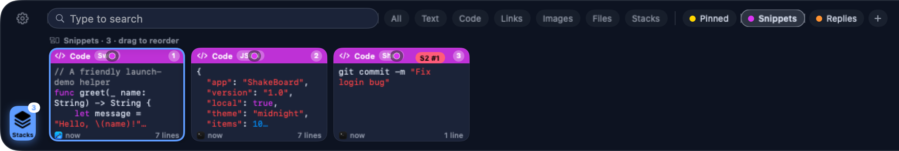
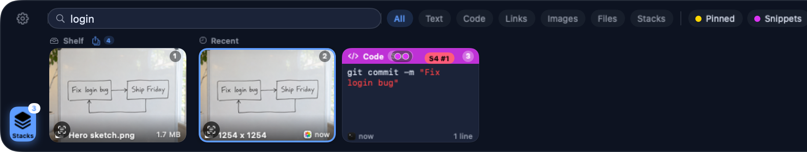
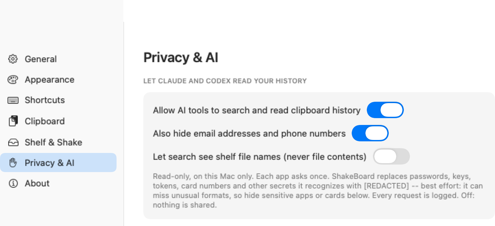

Clipboard history
Text, code, links, images, and files in one searchable strip.
Open source for macOS 14+
Clipboard history, files, paste stacks, and pinboards at the bottom of your Mac. Your data stays on your Mac. No account. No telemetry.
macOS 14 or later
The whole board
Everything at a glance. The five big moves get a closer look below.
Text, code, links, images, and files in one searchable strip.

Park files, then drag them into the app where you need them.

Shake the mouse or press Command-Space to reveal the strip.
Collect a batch, mark it Ready, then paste each item in order.
Select cards in click order, then Send to Stack together.

Turn lines, tabs, or comma-separated text into paste steps.
Keep reusable copies on named, colored, ordered boards.
Find and use text inside copied or shelved images.
Preview, edit, clean up, change case, or format JSON.

Choose a built-in look or build a custom color theme.
Read-only for Claude Code and Codex; off by default, per-app consent, best-effort redaction.

Your data stays on your Mac. No account, no telemetry, and app exclusions.
Planned for folders, network shares, or iCloud Drive.
The strip
Search text, code, links, images, and copied files without breaking focus. Press Return to paste, Shift-Return for plain text, or drag an item straight into another app.

Paste stacks
Collect a batch while you work. Mark a stack Ready and each Command-V pastes the next item; completed stacks stay archived so you can run them again.
For existing history, click cards in the order you want and send the set to a stack.


Pinboards
Make named, colored boards for addresses, replies, code, or anything you reuse. A copy can live on more than one board, and you control its order.

On-device OCR
Apple Vision recognizes text in copied and shelved images on your Mac. Search it, copy it, paste it, or split it into a stack without sending the image away.

AI bridge + privacy
The local MCP bridge for Claude Code and Codex is off by default. Its tools are read-only, each verified client needs consent, and eligible text gets best-effort redaction before it leaves ShakeBoard.
Connections use an owner-only local Unix socket. Requests log time, client, tool, outcome, and counts - never clipboard content or search terms. ShakeBoard has no account and no telemetry.
Read the full privacy policy
Get ShakeBoard
Download ShakeBoard-<version>.dmg from GitHub Releases, open it, and drag ShakeBoard to Applications.
FAQ
Copied text, highlighted code, links, images, and files, plus files you place on the drag shelf. Password managers and secure clipboard markers are excluded.
On your Mac in ~/Library/Application Support/ShakeBoard. There is no ShakeBoard account, cloud service, or telemetry. Encrypted backup and sync are Coming.
For global mouse-shake detection and to follow Command-V so a ready stack can advance. History, search, pinboards, OCR, and the shelf still work without it.
No. Normal paste stays normal. A stack advances only after you explicitly mark it Ready.
No. Apple Vision OCR runs on your Mac and can be turned off.
Only after you enable AI access and approve that client. The local tools are read-only, respect exclusions, use best-effort redaction, and keep a content-free request log.